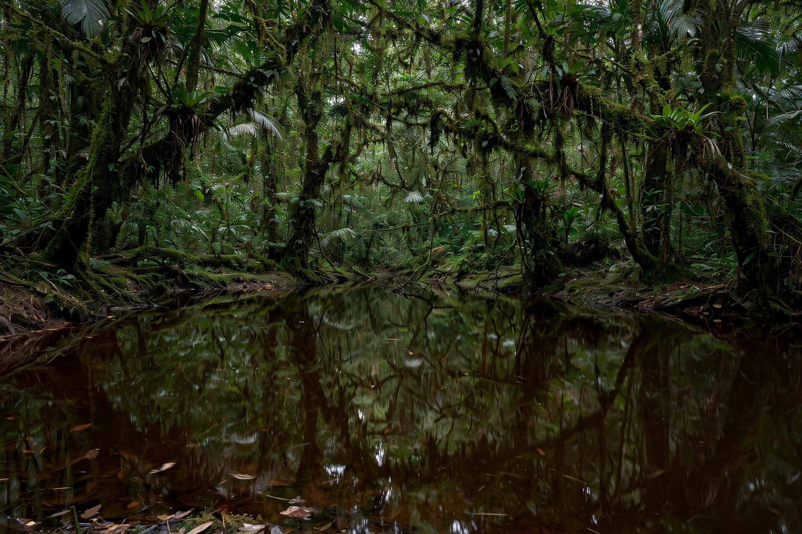

From Wikipedia, the free encyclopedia
| Blackwater river | |
|---|---|
 Tea-coloured blackwater beneath rainforest canopy | |
| Water colour | Dark, transparent, tea-like |
| pH | Acidic, typically 3.5–5.5 |
| Nutrients | Very low |
| Examples | Rio Negro, Suwannee River, Blackwater River (Florida) |
A blackwater river is a type of slow-moving river flowing through forested swamps or wetlands whose water is stained a deep tea colour by tannins and humic acids leached from decaying vegetation. Despite their dark appearance, blackwater rivers are typically clear and transparent; the colour comes from dissolved organic carbon rather than suspended sediment. They are one of the three main river types of the Amazon basin, alongside whitewater and clearwater rivers.
Blackwater rivers drain nutrient-poor, sandy soils. Their water is acidic (pH often below 5), low in dissolved minerals and electrical conductivity, and poor in nutrients, which limits algal growth and aquatic plant life. The high acidity discourages many bacteria and mosquito larvae, historically making blackwater regions less malarial than surrounding areas. Famous examples include the Rio Negro in Brazil — the world's largest blackwater river — and the Suwannee River in the southeastern United States.
Blackwater ecosystems support specialised fish communities adapted to acidic, ion-poor water, including cardinal tetras and discus in the Amazon. Floodplains fed by blackwater (igapó forests) are seasonally inundated but far less fertile than the várzea floodplains of whitewater rivers, and are correspondingly poorer in wildlife density.